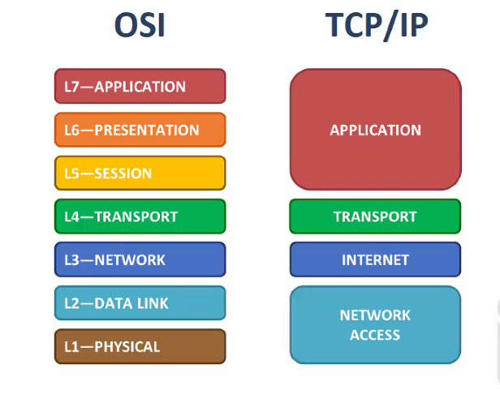

Osi explica cualquier tipo de red (novel apple, token ring, ect).
El tcpip solo esta en relacion con el protocolo TCP.

Si entiendes el modelo OSI puedes entender lo que hace la capa del modelo TCP IP.